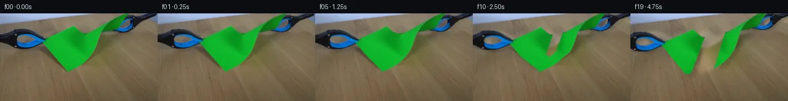

![首帧]()

Round 00
2026-11-04T23:45:16.521055+00:00像素候选变化代码 +317/−0inspection 更新
pixels c2b3ddfd8127edde · code 90ab337068650428
查看本轮 generate.py 真实 diff
--- previous/generate.py
+++ current/generate.py
@@ -0,0 +1,317 @@
+"""Deterministic local RGB compositing and analytic paper deformation.
+No model, network, renderer, external assets, or image viewing is used.
+"""
+from pathlib import Path
+import json
+import numpy as np
+from PIL import Image, ImageDraw
+from scipy import ndimage as ndi
+import cv2
+import artifact_io
+
+ROOT = Path(__file__).resolve().parent
+TMP = ROOT / '.tmp'
+TMP.mkdir(exist_ok=True)
+H, W, SS = 144, 256, 3
+SOURCE = np.asarray(Image.open(ROOT / 'first_frame.png').convert('RGB'), dtype=np.float64)
+Y, X = np.mgrid[:H, :W].astype(float)
+HY, HX = np.mgrid[:H*SS, :W*SS].astype(float)
+HX = (HX+.5)/SS-.5
+HY = (HY+.5)/SS-.5
+R, G, B = SOURCE.transpose(2, 0, 1)
+
+
+def largest(mask):
+ labels, count = ndi.label(mask)
+ counts = np.bincount(labels.ravel())
+ counts[0] = 0
+ return labels == np.argmax(counts)
+
+
+def grow(mask, n=1):
+ return ndi.binary_dilation(mask, iterations=n)
+
+
+def alpha_from_mask(mask):
+ # Original one-pixel optical edge is retained; resampling provides AA.
+ core = ndi.binary_erosion(mask, border_value=1)
+ alpha = mask.astype(float)
+ alpha[mask & ~core] = .92
+ return alpha
+
+
+paper_core = largest((G-R > 40) & (G > B*1.30) & (G > 65))
+# Preserve the narrow, dark crease joining the two sides of the upper notch.
+paper_core = ndi.binary_fill_holes(paper_core)
+paper_near = grow(paper_core, 1)
+_, near_idx = ndi.distance_transform_edt(~paper_core, return_indices=True)
+interior_excess = (G-R)[tuple(near_idx)]
+paper_a = np.where(paper_core, 1., np.clip((G-R)/np.maximum(interior_excess, 70), 0, 1))
+paper_a *= paper_near
+
+# Tool masks come from color and small morphological gap closing, confined
+# to each observed tool. The large openings between the jaws remain empty.
+blue_black = ((B > R+10) & (B > G+5)) | ((R < 65) & (B > G*.91) & (B > R*.95))
+left_seed = blue_black & (Y >= 24) & (Y <= 59) & (X <= 76)
+right_seed = blue_black & (Y <= 32) & (X >= 182)
+
+def tool_mask(seed):
+ pad = np.pad(seed, 3, mode='edge')
+ closed = ndi.binary_closing(pad, structure=np.ones((3,3)))[3:-3,3:-3]
+ # Include optically blurred edge pixels only if their RGB is consistent.
+ edge = grow(closed) & ((B-R > 3) | ((R < 62) & (B >= R-3)))
+ return closed | edge
+
+left_a = alpha_from_mask(tool_mask(left_seed))
+right_a = alpha_from_mask(tool_mask(right_seed))
+# The clamp is physically in front of the paper at the contact patch.
+paper_a *= 1 - np.maximum(left_a, right_a)
+
+# Recover a stationary tabletop. Telea is a local pixel inpainting operator,
+# not a generative model. Only locations hidden by moving objects are filled.
+object_a = 1-(1-paper_a)*(1-left_a)*(1-right_a)
+hidden = grow(object_a > .02, 2)
+filled = cv2.inpaint(SOURCE.astype(np.uint8), (hidden*255).astype(np.uint8), 5, cv2.INPAINT_TELEA).astype(float)
+# Broad occluded areas otherwise become featureless. Add deterministic fine
+# texture from an observed, unobstructed lower tabletop patch only there.
+original_smooth = ndi.gaussian_filter(SOURCE, (2.2, 2.2, 0))
+residual = SOURCE-original_smooth
+texture_y = 104 + (Y.astype(int) % 34)
+texture_x = (X.astype(int)*7 + Y.astype(int)*3) % W
+texture = residual[texture_y, texture_x]
+depth = ndi.distance_transform_edt(hidden)
+filled += texture*np.clip((depth-2)/7, 0, 1)[...,None]*.78
+filled = np.clip(filled, 0, 255)
+
+
+def shifted(a, dx, dy, blur=0):
… diff truncated; 230 more lines …